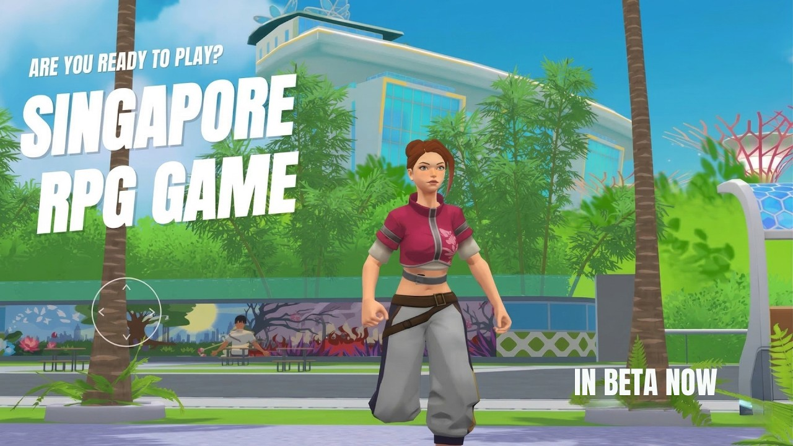
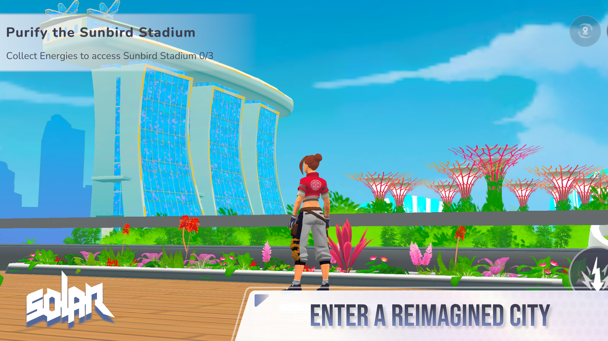

SOLAR
Senior Unity Developer · KYKUYO
Live geolocation/AR mobile game published on Google Play and the App Store, built by a team of around 15. I own the character dressing system, the camera-context architecture, the NPC GPU-rendering pipeline, the onboarding flow, the in-app purchase store and the HUD, plus a set of internal editor tools. It's the project most of the case studies on the Work page come from.
Unity · C# · Addressables · UI Toolkit · GPU Skinning · Jobs System · Burst
View on Google Play →

Watch on YouTube